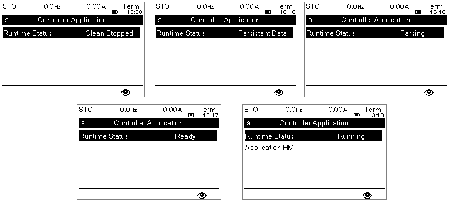

The ATV dPAC status can be displayed on the graphic Display Terminal status bar
To monitor the Runtime Status on the Graphic Display Terminal, follow these steps:
Press the Home button.
Select [9 Controller Application] on Altivar Process ATV6••, or ATV9••, or ATV340.
Monitor the value of Runtime Status.
The following figures display some of the values that the Runtime Status can take:

Runtime Status [DSTA] can take up to 16 values:
|
Name on The Graphic Display Terminal |
RunTime name |
Description |
|---|---|---|
|
Stopped |
STOPPED |
Device contains a project and is stopped |
|
Cold Starting |
COLD_STARTING |
Device is performing a cold start |
|
Warm Starting |
WARM_STARTING |
Device is performing a warm start |
|
Parsing |
PARSING |
Device is parsing a full project |
|
Cleaning |
CLEANING |
Device is cleaning the project |
|
Ready |
READY |
Device is ready to perform a cold or warm start |
|
Running |
RUNNING |
Device is running |
|
Preparing OC |
PREPARING_OC |
Device is preparing for the parsing of online change data |
|
Parsing OC |
PARSING_OC |
Device is parsing the online change data |
|
Swapping OC |
SWAPPING_OC |
Device is performing an online change swap |
|
Cleaning OC |
CLEANING_OC |
Device is purging unused FB instances and obsolete types after an OC |
|
RollingBack OC |
ROLLINGBACK_OC |
Device is rolling back from an error in ParsingOC |
|
Error Stopped |
ERROR_STOPPED |
Device has stopped due to an error |
|
Clean Stopped |
CLEAN_STOPPED |
Device has stopped and contains no loaded project |
|
Persistent DATA |
RM_OR_RST_PERS_DATA |
Device is removing or restoring the persistent data |
|
Unknown |
UNKNOWN |
Device state is unknow |